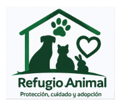
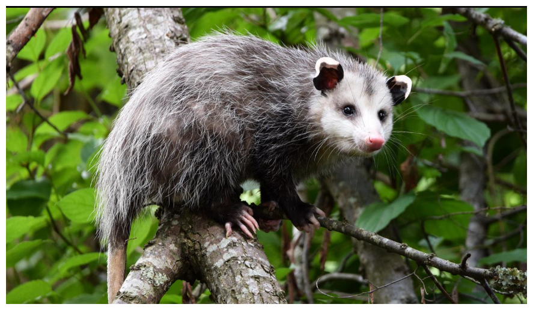

Perros
Rescate y atención de perros en situación de abandono.

Refugio Animal - Protección, atención y nuevas oportunidades
Esta plataforma permite organizar los casos de animales rescatados, registrar su ingreso, asignar responsables y consultar el estado de su atención.
El objetivo del refugio es brindar atención oportuna a perros, gatos y animales de fauna silvestre, facilitando su recuperación y, cuando sea posible, su adopción o reintegración.
Rescate y atención de perros en situación de abandono.
Protección y cuidado de gatos rescatados.

Atención y protección de animales silvestres.
24 casos registrados.
8 animales reciben atención veterinaria.
6 animales disponibles para adopción.
3 casos requieren un responsable.
Nota: las cantidades mostradas son datos demostrativos.
Ingresa la información inicial del animal y describe las condiciones en las que fue encontrado.
Ir al formulario de rescateRevisa los animales ingresados, su nivel de urgencia, responsable y estado del proceso.
Ver listado de rescates